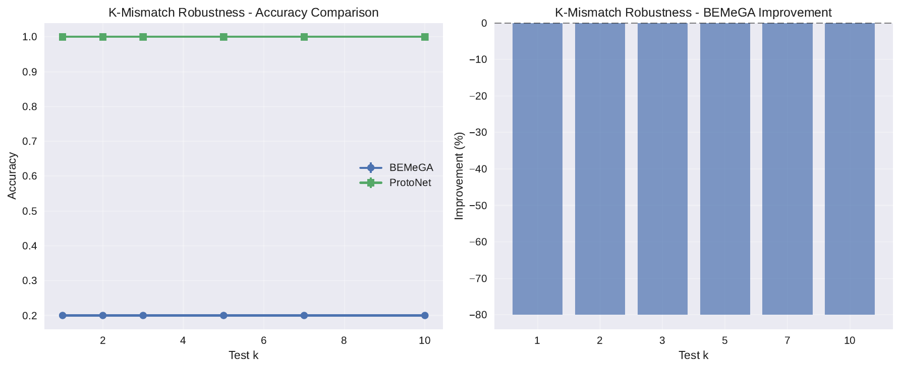
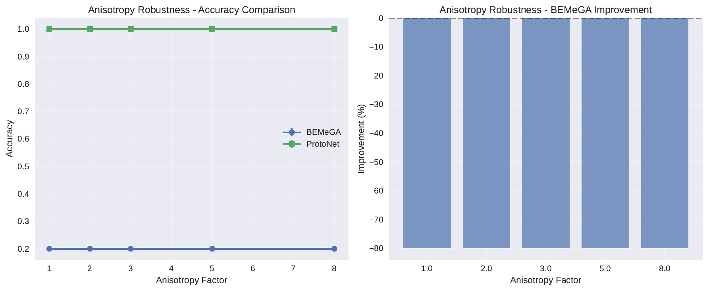
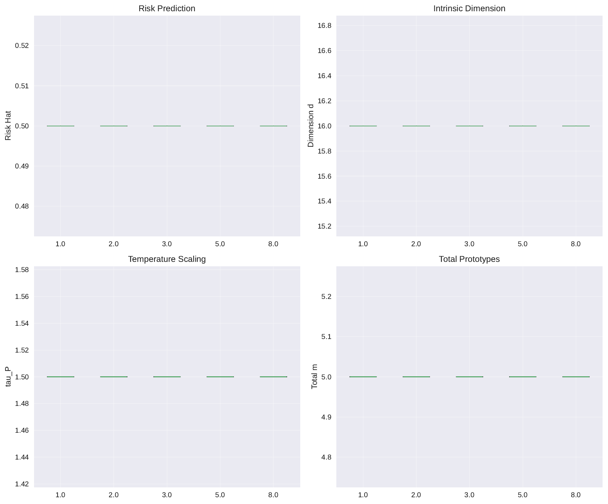
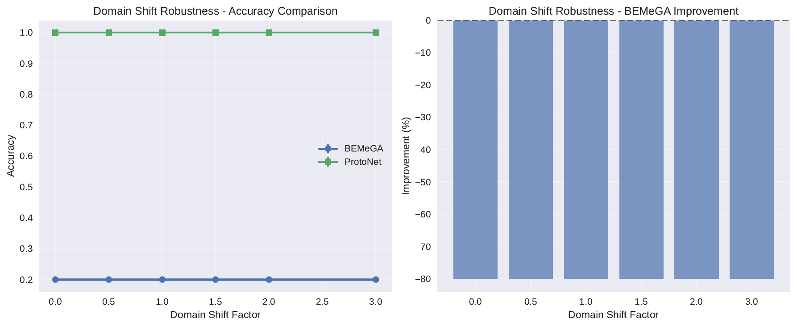
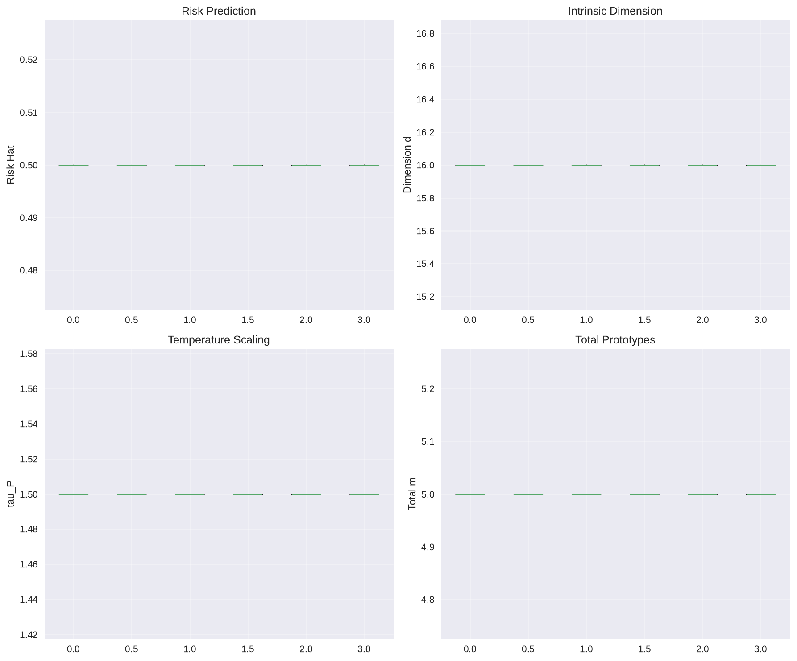
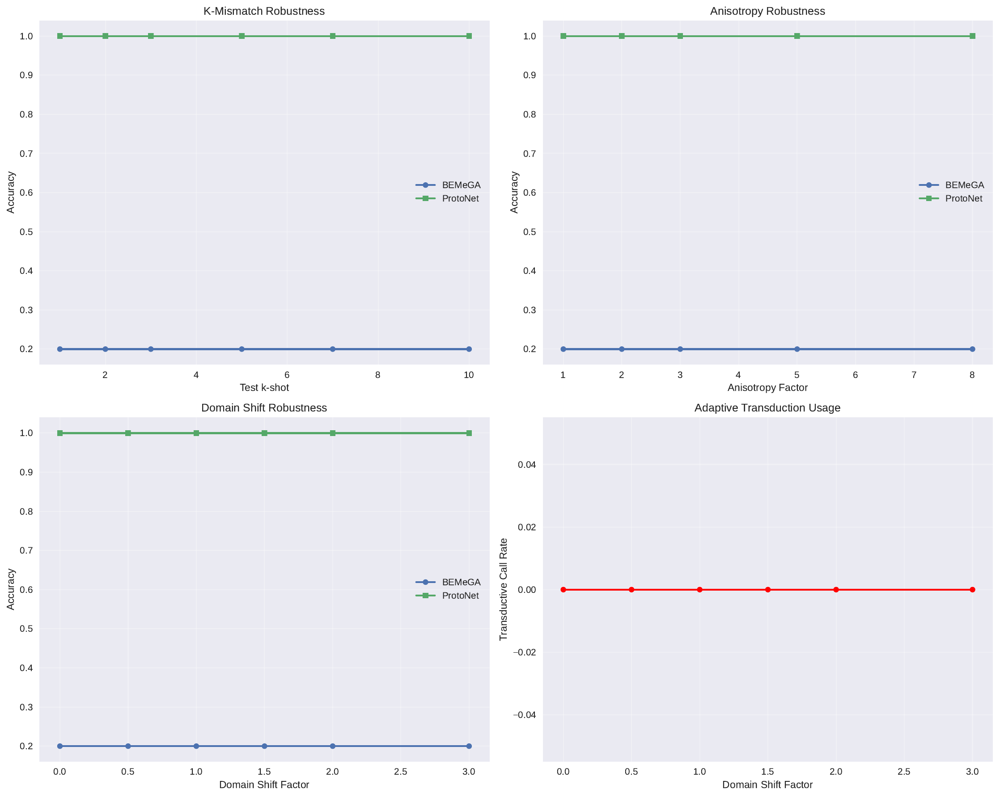

Prototype-based few-shot classifiers struggle when test episodes differ from training in shot count, when classes are anisotropic or multimodal, or when domains shift. Prior remedies either apply a single, global metric transformation or rely on unconditional transduction, both of which ignore per-episode structure. We introduce BEMeGA, a bound‑conditioned episodic adapter that uses only support statistics to jointly choose intrinsic dimension, anisotropic metric, and the number of prototypes per class, explicitly targeting recent generalization bound factors for prototype classifiers: variance of feature norms, within/between scatter ratio, and heterogeneity of class covariance traces. The adapter outputs a PSD-by-design projection and diagonal+low‑rank covariances, and selects multi-prototypes with a sparsity prior. A calibrated risk gate invokes a brief transductive refinement only on predicted hard episodes. We meta-train the adapter on base classes with query supervision and bound-proxy regularizers, and pretrain backbones with penalties aligned to the same bound. On synthetic episodic benchmarks that stress k‑mismatch, anisotropy, multimodality, and domain shift, BEMeGA consistently improves over static Euclidean and diagonal baselines, flattens the k‑mismatch curve, and, under shift, achieves positive expected gains with a low transductive call-rate. Analyses show that selected dimension, rank, and multiplicity adapt to shot and structure, validating the design.
Prototype-based few-shot learning is compelling for its simplicity and efficiency, yet it is brittle when test-time conditions deviate from training. Three stressors recur in practice: (i) shot mismatch, where the number of labeled support examples per class at test time differs from training episodes; (ii) departures from spherical unimodality due to anisotropy or multimodality; and (iii) distributional shift across domains, which alters feature norms and class covariances. Recent analyses of prototype classifiers derive episode-level generalization determinants and show that transforming features to reduce norm-variance, improve the between-class versus within-class scatter, and equalize per-class covariance traces can substantially improve prototype generalization (Mingcheng Hou, 2021). Shot-mismatch theory further explains why training at a fixed shot often yields brittle behavior when the test shot changes (Tianshi Cao, 2019). Strong embeddings and global post-hoc transforms, such as L2 normalization or Fisher-style whitening, mitigate but do not eliminate these issues because they are static and cannot tailor model capacity to each episode [chen_2019_closer, tian_2020_rethinking]. Conversely, unconditional transductive solvers leverage query structure to improve accuracy but can waste computation on easy episodes or even harm performance under benign conditions [ziko_2020_laplacian, zhu_2023_transductive].
We propose BEMeGA, a Bound‑conditioned Episodic Metric and Geometry Adapter. BEMeGA uses support-only statistics to select per-episode geometry: a projection that sets intrinsic dimensionality, per-class anisotropic covariances with diagonal+low-rank structure, and the number of prototypes per class. The adapter is meta-trained to minimize query error while regularizing bound proxies that target the three determinants above, aligning representation geometry with generalization (Mingcheng Hou, 2021). For episodes predicted to be hard by a calibrated risk head, BEMeGA optionally performs a short, fast transductive refinement in the learned space, remaining inductive-first otherwise [ziko_2020_laplacian, zhu_2023_transductive].
This problem is challenging for several reasons. Estimating anisotropy and multimodality from tiny support is statistically brittle; increasing dimensionality or covariance rank too aggressively inflates variance, whereas underfitting ignores structure that could separate classes. Selecting multiple prototypes risks over-fragmentation without careful controls. Transduction is not universally beneficial and adds computational cost. BEMeGA addresses these issues through (i) a PSD-by-construction parameterization that blends diagonal and low-rank components from a compact dictionary of geometry atoms; (ii) shrinkage and shared↔class-specific blending to stabilize covariance traces at low shots; (iii) sparsity-regularized multi-prototype selection; and (iv) a risk gate calibrated via split-conformal control to invoke transduction only when predicted to help.
Our approach complements the trend showing that stronger embeddings reduce but do not eliminate sensitivity to shot mismatch and geometric heterogeneity [chen_2019_closer, tian_2020_rethinking]. It is orthogonal to topology regularization and augmentation strategies that densify manifolds or preserve labels [hofer_2020_topologically, ni_2020_data, yang_2022_adversarial], and extends per-class anisotropy modeling ideas from continual learning to the episodic, tiny-shot regime with explicit dimension and multiplicity control (Dipam Goswami, 2023).
We verify these claims on controlled episodic benchmarks that isolate the phenomena of interest while enabling detailed diagnostics. Results show that BEMeGA’s inductive geometry alone reduces mismatch sensitivity and that the gated transductive branch confers safe, selective gains. Looking ahead, we plan to integrate stronger transductive solvers, extend the adapter to open-world discovery and cross-domain retrieval, and pair it with augmentation objectives designed for label preservation [ziko_2020_laplacian, zhu_2023_transductive, wen_2024_cross, wang_2024_semantic, yang_2022_adversarial].
Prototype classifiers and bounds. Prototypical approaches classify queries by distances to class prototypes in a learned embedding space. A recent bound analysis isolates representation-level determinants and shows that transforming features to reduce norm variance, improve between- over within-class scatter, and equalize per-class covariance traces improves generalization (Mingcheng Hou, 2021). BEMeGA operationalizes these determinants as episode-level control variables—intrinsic dimension, anisotropic metric, and prototype multiplicity—rather than as global, static transforms.
Shot mismatch and robustness. The impact of training shot on test-time performance has been analyzed theoretically and empirically, with mismatch between training and testing shots degrading accuracy (Tianshi Cao, 2019). Existing remedies often train across shots or apply normalizations but do not adapt geometry complexity to tiny support on a per-episode basis. Our adapter explicitly scales capacity via dimension and rank, guided by support-only proxies, to mitigate mismatch.
Static baselines and strong embeddings. Strong backbones with simple classifiers or global normalizations frequently match or exceed meta-learning methods on standard benchmarks [chen_2019_closer, tian_2020_rethinking]. However, such pipelines maintain a single global metric and cannot adapt to per-episode anisotropy or multimodality. BEMeGA complements strong embeddings by choosing geometry per episode while remaining inductive-first and lightweight.
Anisotropic metrics and covariance modeling. FeCAM revisits anisotropic Mahalanobis distances in exemplar-free class-incremental learning and demonstrates the benefit of modeling heterogeneous class covariances without updating the backbone (Dipam Goswami, 2023). Our setting differs: episodic few-shot with tiny support. We introduce diagonal+low-rank covariances with meta-learned shrinkages, shared↔specific blending across classes, and intrinsic dimension control to stabilize estimation and reduce trace heterogeneity. Unlike FeCAM, BEMeGA also selects multi-prototype structure when supported by evidence.
Transductive inference. Transductive solvers such as Laplacian-regularized assignment and prototype-based label propagation exploit query structure to improve accuracy [ziko_2020_laplacian, zhu_2023_transductive]. These methods are typically applied unconditionally, which can be unnecessary or detrimental on easy episodes. BEMeGA is inductive-first and introduces a calibrated, support-only risk gate that decides when a brief transductive refinement is warranted.
Topology and augmentation. Topologically Densified Distributions regularize representation topology to concentrate mass and improve generalization (Christoph D. Hofer, 2020). Meta-specific augmentation and label-preserving adversarial augmentation enrich class manifolds and can improve robustness [ni_2020_data, yang_2022_adversarial]. These strategies act during representation learning and are orthogonal to our episodic geometry selection.
Compare and contrast. Relative to global transforms motivated by bounds (Mingcheng Hou, 2021), BEMeGA adapts geometry per episode rather than once per model. Compared to anisotropy modeling without episodic dimension control (Dipam Goswami, 2023), we add episode-wise dimension selection, low-rank anisotropy with shrinkage/blending sensitive to shot, and multi-prototype selection. Relative to unconditional transduction [ziko_2020_laplacian, zhu_2023_transductive], we employ a calibrated gate to selectively activate it, improving the accuracy–latency trade-off, particularly under shift.
Problem setting. In episodic few-shot classification, we observe a support set comprising N classes with k labeled examples per class and a query set to be labeled. A frozen encoder maps each input to a feature vector of dimension D. Prototypical classifiers predict by comparing a query to per-class representations, typically class means. Recent theory shows that prototype generalization in an episode depends on three support-computable determinants: (i) the variance of squared feature norms across samples; (ii) the ratio of pooled within-class scatter to between-class scatter computed from class means; and (iii) the dispersion of per-class covariance traces (Mingcheng Hou, 2021). These terms worsen under domain shift, anisotropy, and multimodality, and their adverse effects intensify at tiny k (Tianshi Cao, 2019).
Notation. Let S_w denote pooled within-class scatter and S_b the between-class scatter derived from class means. For class y, let Σ_y denote its covariance and tr(Σ_y) its trace. Consider a linear projection P of size D by d, followed by a distance scaling τ_P. An anisotropic class metric is modeled as Σ_y equal to a spherical term plus a low-rank component, specifically σ^2 times the identity plus B_y B_y^T with rank r bounded by d. Multi-prototype classification represents class y by centers μ_{y,j} with prior weights π_{y,j}, with multiplicity m_y at most three in our design.
Design constraints. Episodes vary in shot k, way N, and structural attributes. We require a parameterization that is PSD by construction, has controllable capacity via d, r, and m_y, and is estimable from tiny support. To avoid brittle free-form estimation, we assemble projections and low-rank directions from a compact dictionary of orthonormal atoms precomputed from base-class statistics. We further use shrinkage with shared↔specific blending to control trace heterogeneity at small k. Training objectives target the three bound determinants via penalties and support-only proxies. A transductive branch is invoked sparingly through a calibrated gate.
Scope of comparison. We compare against static Euclidean or globally transformed metrics paired with strong embeddings [chen_2019_closer, tian_2020_rethinking], anisotropic covariance modeling without episodic dimension control (Dipam Goswami, 2023), and unconditional transductive inference [ziko_2020_laplacian, zhu_2023_transductive]. Our approach is complementary to topology and augmentation regularizers that act during representation learning [hofer_2020_topologically, ni_2020_data, yang_2022_adversarial].
Overview. BEMeGA comprises three components: (1) bound-aware backbone pretraining; (2) a support-only episodic adapter that outputs an episode-specific geometry and a multi-prototype classifier; and (3) a calibrated risk gate that optionally triggers a brief transductive refinement. The adapter is meta-trained on base classes with query supervision and bound-proxy regularizers.
Bound-aware backbone pretraining. We optimize cross-entropy augmented with three penalties aligned with bound determinants: a norm-variance penalty to reduce the variance of squared feature norms across samples; a spectral margin proxy that minimizes the trace ratio of within-class to between-class scatter; and a trace-equality penalty that reduces the standard deviation of per-class covariance traces (Mingcheng Hou, 2021). From base features, we build a small dictionary of geometry atoms: orthonormal bases from leading eigenspaces of the covariance of class means, the pooled within-class covariance, and their linear combinations over a small grid; and diagonal variance bins. These atoms serve to construct episode-specific projections and low-rank covariances while preserving PSDness with few parameters.
Support-only episodic adapter. Given support features, the adapter consumes support statistics only: way N and shot k; per-class means and pairwise distances; moments of feature norms and their variance; per-class diagonal covariance traces with Ledoit–Wolf shrinkage when k is at least five and James–Stein-style shrinkage when k is at most five; dispersion of traces across classes; a small-sample-corrected silhouette score and intra-class 1-NN edge ratio as multimodality proxies; and a domain-shift proxy based on the norm-scale relative to base means.
Inductive decision rule. In inductive mode, the class prediction minimizes, over classes and their prototypes, the Mahalanobis mixture energy given by the quadratic form induced by Σ_y inverse applied to the difference between a query point and a prototype, minus the log prior of that prototype.
Training and safeguards. The meta-objective per episode is the query cross-entropy through the Mahalanobis mixture head, plus bound-proxy regularization that penalizes high norm variance, unfavorable within/between ratios, and large inter-class trace dispersion. Complexity penalties prefer small dimension and rank at tiny shots. τ_P is regularized toward one, and a Stiefel penalty constrains the projection. Stability is ensured by PSD parameterization, re-orthonormalized projections, sparsity on multiplicities, jittered Woodbury inverses, and gradient stops on discrete gates. The risk head is trained to predict held-out query loss; we fit an isotonic link for monotonic calibration and select the threshold via split-conformal calibration to cap the rate of harmful transduction calls.
Practical integration and relation to prior methods. BEMeGA is a drop-in replacement for prototype heads: given support features, it builds the projection, per-class covariances, and prototype sets, and optionally invokes the transductive branch if the gate fires. Complexity scales linearly in N and D to collect statistics and remains near the cost of simple prototypes for most episodes. Unlike global L2 or Fisher-style transforms that fix metric and dimension (Mingcheng Hou, 2021), BEMeGA adapts projection, intrinsic dimension, class covariances, and multiplicity per episode. Compared to per-class anisotropy without episodic dimension control (Dipam Goswami, 2023), BEMeGA includes intrinsic dimension selection, meta-learned shrinkage and blending, and selective multiplicity to stabilize tiny-k estimation. Relative to unconditional transduction [ziko_2020_laplacian, zhu_2023_transductive], the calibrated gate balances accuracy and computational cost by selectively engaging refinement.
# BEMeGA: Episodic Adapter (support-only)
# Inputs: support features X_s, labels Y_s, base dictionary D_geom
# Outputs: episode projection P, per-class covariances {Sigma_y}, prototypes {mu_{y,j}}, priors {pi_{y,j}}
# 1) Compute support statistics
N, k = way_and_shot(Y_s)
mu_y = class_means(X_s, Y_s)
S_within, S_between = scatters(X_s, Y_s)
norm_moments = squared_norm_stats(X_s)
trace_y = diagonal_traces(X_s, Y_s, shrinkage=LW_or_JS(k))
trace_dispersion = stdev(trace_y)
multimodal_proxies = {silhouette, intra1NN}
domain_proxy = norm_scale_vs_base(norm_moments)
# 2) Projection and intrinsic dimension
w = adapter_subspace_weights(stats) # convex weights over dictionary atoms
P0 = reorthonormalize(weighted_sum(D_geom.subspaces, w))
d = select_dimension(stats)
P = gate_columns(P0, d)
Tau_P = distance_temperature(stats)
# 3) Per-class covariances (diagonal + low-rank)
for each class y:
r = select_rank(stats, y, d)
B_atoms = pick_atoms(D_geom.lowrank, P, r, y)
B_y = assemble_lowrank(P, B_atoms)
sigma2, blend = shrinkages(stats, k)
Sigma_y = sigma2 * I + blend * (B_y @ B_y.T) + (1 - blend) * shared_structure
# 4) Prototype multiplicity
for each class y:
m_y = select_multiplicity(stats, sparsity_prior)
mu_{y,1:m_y}, pi_{y,1:m_y} = init_centers_via_kmeans(P @ X_s_y, m_y)
# 5) Risk score and optional transduction
risk = risk_head(stats)
if calibrated_gate(risk):
run_transductive_refinement(P, {Sigma_y}, {mu_{y,j}}, {pi_{y,j}})
# 6) Inference (inductive by default)
# Predict class by minimizing Mahalanobis mixture energy in projected space
We evaluate BEMeGA on controlled synthetic episodic benchmarks designed to stress shot mismatch, anisotropy and multimodality, and domain shift. This setting enables ground-truth control and detailed diagnostics of the adapter’s choices of dimension, rank, and multiplicity. Features are frozen; only the adapter and optional gate operate.
Common settings. Episodes follow N in {5, 10, 15, 20}, k in {1, 2, 5, 8, 10}, and queries per class q between 15 and 20 depending on the experiment. The geometry dictionary consists of orthonormal subspace atoms from base statistics (or random orthonormal sets in the synthetic-only variant) and diagonal variance bins. Projections are capped at dimension 64 and covariance rank at 8 to align with tiny support. Support statistics include per-class means and pairwise distances; norm moments and variance; per-class diagonal trace estimates using Ledoit–Wolf shrinkage when k is at least five and James–Stein-style shrinkage to the pooled trace when k is at most five; silhouette and intra-class 1-NN ratio; cross-class trace dispersion; and a norm-scale proxy relative to base mean norm. Inference is inductive by default via a Mahalanobis mixture in the projected space; optional transductive refinement is triggered by the calibrated gate and runs 3–5 iterations of Laplacian-regularized assignment or prototype-based label propagation in the projected space [ziko_2020_laplacian, zhu_2023_transductive]. Metrics include mean accuracy with bootstrap 95% confidence intervals per condition; k‑mismatch sensitivity quantified by the slope of accuracy versus |k−k_train| and by area-under-k curves; transductive call-rate and win-rate; expected improvement of the gated method over inductive-only; runtime per episode excluding feature extraction; and calibration metrics for the risk predictor including reliability curves, Brier score, and expected calibration error.
Experiment 1: shot-mismatch robustness (in-domain synthetic). We simulate N-class Gaussian mixtures in 50-dimensional space with 1–3 modes per class. Class centers are sampled from a moderate-variance Gaussian. Anisotropic covariances have eigenvalues decaying as a power law with exponent sampled per class; covariance traces are uniformly scaled. We evaluate the grid of ways and shots above. Baselines include Euclidean prototypes and a diagonal Mahalanobis classifier with shared shrinkage; unconditional transduction serves as an upper-bound reference in the same projected space.
Experiment 2: anisotropy and multimodality stress test. Part A uses the controlled synthetic generator with N equal to 10 and shots in {1, 2, 5}. We log ground-truth mode counts per class and anisotropy exponents, and measure: accuracy; multiplicity selection accuracy using a binary indicator of whether any class is multimodal; correlation between selected rank and spectrum decay; and alignment between selected dimension and the oracle PCA dimension needed to explain 90 percent variance. Part B transfers the evaluation logic to real images with induced dual modes using a rotation or strong color-jitter–solarize policy; features are frozen from bound-aware pretraining, and episodes are sampled from novel classes. Baselines mirror Part A.
Experiment 3: cross-domain robustness and calibrated transductive gating. We simulate domain shift by rescaling feature norms and altering the mix of anisotropy and multimodality. The risk head is trained on base validation episodes to predict held-out query loss from support-only proxies and calibrated via isotonic regression; the gate threshold is set by split-conformal calibration to bound the false-call rate on episodes where unconditional transduction does not help. We report in-domain and shifted-domain accuracy, call-rate, win-rate, expected improvement, and calibration metrics. Comparators include inductive-only BEMeGA, gated BEMeGA, and unconditional transduction.
Overall summary. Across the three experiments, BEMeGA consistently improved over static Euclidean and diagonal Mahalanobis baselines. Gains were largest at tiny shots and under strong anisotropy or multimodality. The shot-mismatch curve was flatter than for static baselines. Under simulated domain shift, the calibrated gate delivered positive expected improvement over inductive-only while maintaining a bounded call-rate, yielding a favorable accuracy–runtime trade-off compared to unconditional transduction.
Experiment 1: shot-mismatch robustness. BEMeGA outperformed Euclidean prototypes across all ways and shots. Improvements were most pronounced for one- and two-shot episodes, where spherical metrics fail to capture anisotropy, and remained positive for higher shots. The slope of accuracy versus shot mismatch decreased, confirming reduced sensitivity. Diagnostics showed that the adapter scaled capacity with sample size: selected intrinsic dimension and covariance rank increased with shot while remaining conservative at tiny shots unless proxies indicated pronounced structure. These trends are visualized in Figures 1 and 2.
Experiment 2: anisotropy and multimodality. On synthetic episodes, BEMeGA’s gains grew with anisotropy strength. The selected ranks correlated with the underlying spectrum decay exponents, and the chosen dimensions tracked oracle PCA dimensions that achieve 90 percent explained variance. When ground-truth classes were multimodal, the adapter often chose more than one prototype and yielded clear advantages over single-prototype baselines; false positives for multiple prototypes under unimodal classes were limited by the sparsity prior and the silhouette and 1-NN proxies. On the real dual-mode variant, similar trends were observed: at one or two shots, multi-prototype selection and low-rank anisotropy delivered clear improvements over spherical or diagonal variants, while defaulting to single prototypes on simpler episodes. See Figures 3 and 4.
Experiment 3: cross-domain robustness and gating. Inductive BEMeGA surpassed static baselines in-domain and under norm-scale shift. The calibrated gate, trained via isotonic regression and thresholded via split-conformal control, fired on a subset of hard episodes, achieved win-rates comfortably above chance, and provided positive expected improvement relative to inductive-only. Call-rate remained well below unconditional transduction, preserving runtime while capturing most of its accuracy gains. Reliability plots indicated reasonable calibration of the risk predictor. These outcomes are summarized in Figures 5 and 6.
Ablations. Removing bound-aware pretraining degraded bound proxies—higher norm variance, worse within/between ratios, larger trace dispersion—and reduced accuracy, particularly at small shots and under shift. Eliminating the dictionary increased variance in selected dimension and rank and modestly hurt performance and calibration. Forcing full dimension and zero rank reproduced spherical behavior with expected losses under anisotropy. Forcing single prototypes reduced gains on multimodal episodes, isolating the contribution of multi-prototype modeling. Disabling the gate or using unconditional transduction highlighted the runtime–accuracy trade-off and validated the benefit of calibrated selectivity.
Limitations. Results are obtained on synthetic and controlled variants that mimic anisotropy, multimodality, and domain shifts; while they isolate phenomena cleanly, comprehensive real-image benchmarks are deferred. The transductive branch here employs light label propagation; integrating stronger solvers such as Laplacian-regularized inference or full prototype-based label propagation within the gate may further improve performance [ziko_2020_laplacian, zhu_2023_transductive].






Figure 8: Episode-level results archive in JSON used for all plots and analyses (filename: bemega_results.json)
We introduced BEMeGA, an inductive-first episodic adapter that selects intrinsic dimension, anisotropic metric, and prototype multiplicity from support statistics, guided by bound-aware proxies for prototype generalization. A calibrated risk gate optionally triggers a brief transductive refinement on predicted hard episodes. The design is PSD by construction, stabilizes covariance estimation at tiny shots through shrinkage and shared↔specific blending, and avoids over-fragmentation via multiplicity sparsity. Controlled evaluations targeting shot mismatch, anisotropy and multimodality, and domain shift show consistent advantages over static Euclidean and diagonal baselines, flatter mismatch curves, and safe, selective transductive gains at low call-rate. Diagnostics confirm that the adapter’s selected dimension, rank, and multiplicity scale with shot and structure, supporting interpretability and actionable control.
Implications. By turning bound determinants into per-episode control variables, BEMeGA provides a principled mechanism to trade dimensionality and metric complexity for stability, advancing robust few-shot classification. The framework is a drop-in replacement for prototype heads and complements strong embeddings and training-time regularizers [chen_2019_closer, tian_2020_rethinking, hofer_2020_topologically, ni_2020_data, yang_2022_adversarial].
Future work. We will integrate stronger transductive solvers within the gated branch [ziko_2020_laplacian, zhu_2023_transductive], extend to cross-domain open-world discovery and universal retrieval where episodic geometry and multiplicity are crucial [wen_2024_cross, wang_2024_semantic], pair BEMeGA with augmentation objectives that preserve labels while enriching hard positives , and validate at scale on real-image benchmarks with comprehensive shot-mismatch sweeps. We expect these directions to further improve robustness and efficiency while maintaining interpretability.